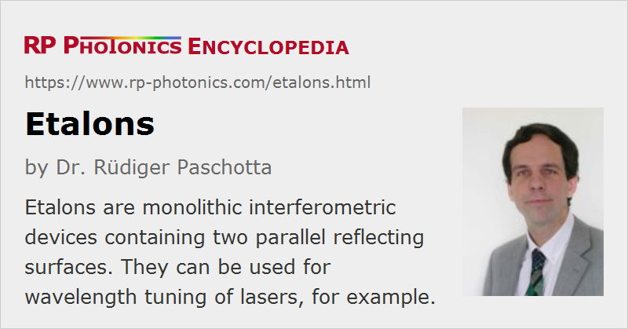

Etalons
Definition: monolithic interferometric devices containing two parallel reflecting surfaces
German: Etalons
Categories: optical resonators, photonic devices
How to cite the article; suggest additional literature
Author: Dr. Rüdiger Paschotta
An optical etalon (also called Fabry–Pérot etalon) was originally a Fabry–Pérot interferometer in the form of a transparent plate (often made of fused silica) with parallel reflecting surfaces (solid etalon). However, the term is often also used for Fabry–Pérots consisting of two mirrors with some air gap in between (air-spaced etalon).

When inserted into a laser beam, an etalon acts as an optical resonator (cavity), with the transmission periodically varying with the optical frequency. (Strictly, the transmission is not exactly periodic in frequency due to chromatic dispersion.) In resonance, the reflections from the two surfaces cancel each other via destructive interference. The highest reflection losses occur in anti-resonance. The transmission versus frequency can be described with an Airy function, which approximately fits a simple sinusoidal function for not too high surface reflectivities.
The resonance effects occur even with some tilt (Figure 1), provided that the tilt angle is so small that the overlap of counterpropagating waves is not significantly reduced. The tilt angle can then be used to control the resonance frequencies. An etalon can therefore be used as an adjustable optical filter, e.g. for tuning the wavelength of a laser.
The reflectivities of the etalon's surfaces may simply result from the refractive index discontinuity between the etalon material and air (Fresnel reflection) or may be modified with a dielectric coating. By increasing the reflectivity, it is possible to increase the finesse, i.e., to sharpen the resonances without reducing the free spectral range.
The effective finesse of an etalon may not reach the value which could be expected based on the surface reflectivities: it can be reduced, for example, if the reflecting surfaces are not perfectly parallel and flat. For high surface reflectivities, one may require an extremely high surface quality (low roughness) to realize the theoretically possible finesse. A reduced finesse can also result from using a too small or not properly collimated beam, a too large tilt angle, or a reduced beam quality.
When operated away from resonance or anti-resonance, an etalon provides chromatic dispersion. This is exploited in some dispersion compensation modules for optical fiber communications.
Suppliers
The RP Photonics Buyer's Guide contains 25 suppliers for etalons. Among them:
Questions and Comments from Users
Here you can submit questions and comments. As far as they get accepted by the author, they will appear above this paragraph together with the author’s answer. The author will decide on acceptance based on certain criteria. Essentially, the issue must be of sufficiently broad interest.
Please do not enter personal data here; we would otherwise delete it soon. (See also our privacy declaration.) If you wish to receive personal feedback or consultancy from the author, please contact him e.g. via e-mail.
By submitting the information, you give your consent to the potential publication of your inputs on our website according to our rules. (If you later retract your consent, we will delete those inputs.) As your inputs are first reviewed by the author, they may be published with some delay.
Bibliography
| [1] | Analysis of an air-spaced etalon with the RP Coating software |
See also: Fabry–Pérot interferometers, cavities, free spectral range, finesse, dispersion compensation modules, wavelength tuning, The Photonics Spotlight 2009-12-31
and other articles in the categories optical resonators, photonic devices
|  |
If you like this page, please share the link with your friends and colleagues, e.g. via social media:
These sharing buttons are implemented in a privacy-friendly way!